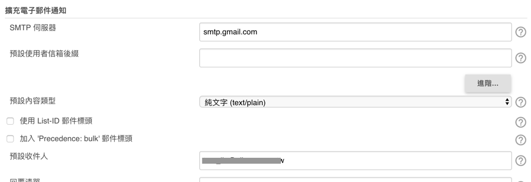
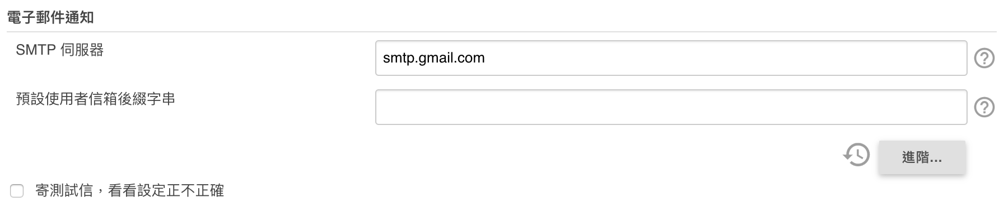
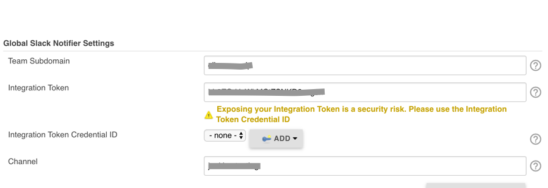
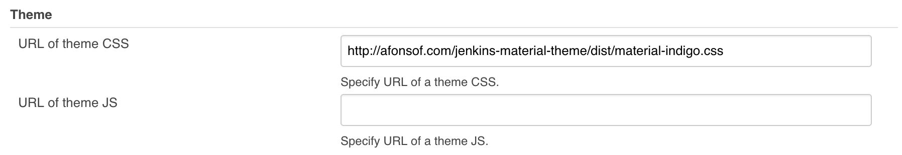
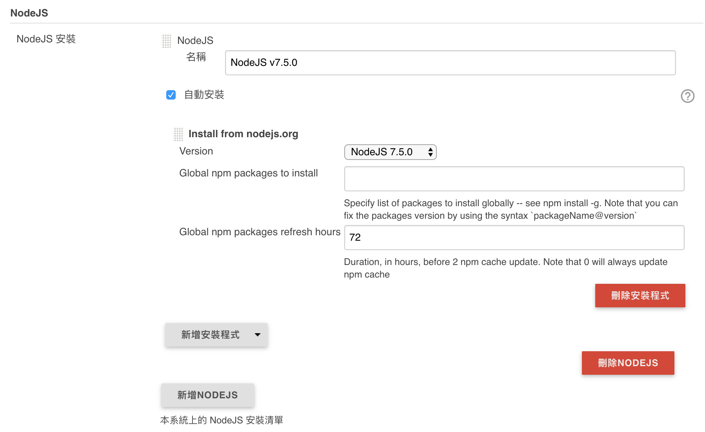

Install Jenkins
$ wget -q -O - https://jenkins-ci.org/debian/jenkins-ci.org.key | sudo apt-key add -
$ sudo sh -c 'echo deb http://pkg.jenkins-ci.org/debian binary/ > /etc/apt/sources.list.d/jenkins.list'
$ sudo apt-get update
$ sudo apt-get install jenkins
$ sudo service jenkins start | stop | restart
Go to browser. http://localhost:8080
http://www.arthurtoday.com/2015/04/ubuntu-install-jenkins-by-atp.html
My Jenkins Plugins List
- Backup plugin
- cucumber-slack-notifier (option)
- Email Extension Plugin
- GitHub Organization Folder Plugin (option)
- GitLab Plugin
- NodeJS Plugin
- Simple Theme Plugin (option)
- Slack Notification Plugin
- SSH Slaves plugin
- Timestamper
- Workspace Cleanup Plugin
Jenkins > System Configuration
Email Extension Plugin

Email Notification

Global Slack Notifier Settings

Simple Theme Plugin
CSS: http://afonsof.com/jenkins-material-theme/dist/material-indigo.css

Jenkins > Global Tool Configuration
NodeJS Plugin
